Intro to SQL
Plan
- Creating & populating a database
- Building a query
- Filtering
- Querying multiple tables
Database
A set of related information.
Phone books: a database?
- It contains formated information
- Information is indexed
- It's possible to find a piece of information (phone number, address) from a name
Phone book: a bad database!
- Time consuming: it contains a large number of entries
- Indexed by last/first names
- Once it's printed, there is no more updates
Hierarchical database system

Network database system

Relational model
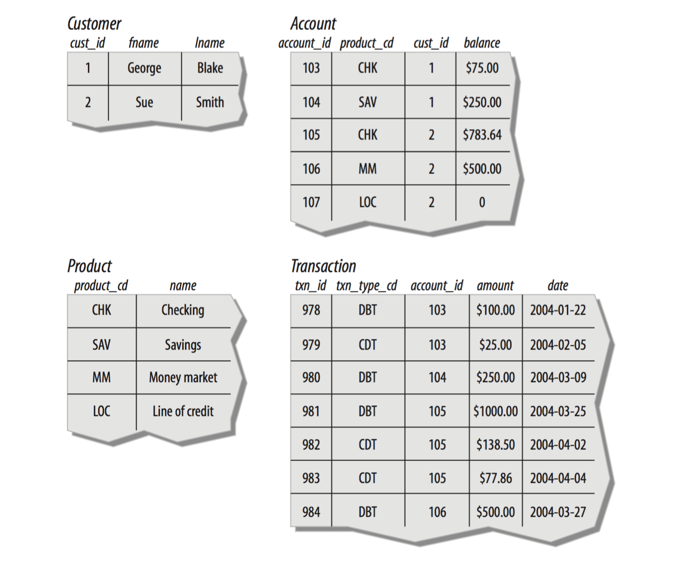Terminology
Entity
Something of interest to the database user community. Examples include customers, parts, geographic locations, etc.
Column
An individual piece of data stored in a table.
Row
A set of columns that together completely describe an entity or some action on an entity. Also called a record or a tuple.
Table
A set of rows, held either in memory (nonpersistent) or on permanent storage (persistent).
Result set
Another name for a nonpersistent table, generally the result of an SQL query.
Primary key
One or more columns that can be used as a unique identifier for each row in a table.
Foreign key
One or more columns that can be used together to identify a single row in another table.
SQL
- Chamberlin and Boyce (IBM) in the early 1970s
- Initialy called SEQUEL
SQL statements
- Schema statement to define the data structures stored in the database
- Data statement to manipulate the data
- Transaction statement to begin, end, and roll back transactions
A progamming language
- Nonprocedural
- Dependant to other environments

Setup an environment
A server

From your laptop!

Or in the cloud

Connect

Create a workspace

Presentation of C9
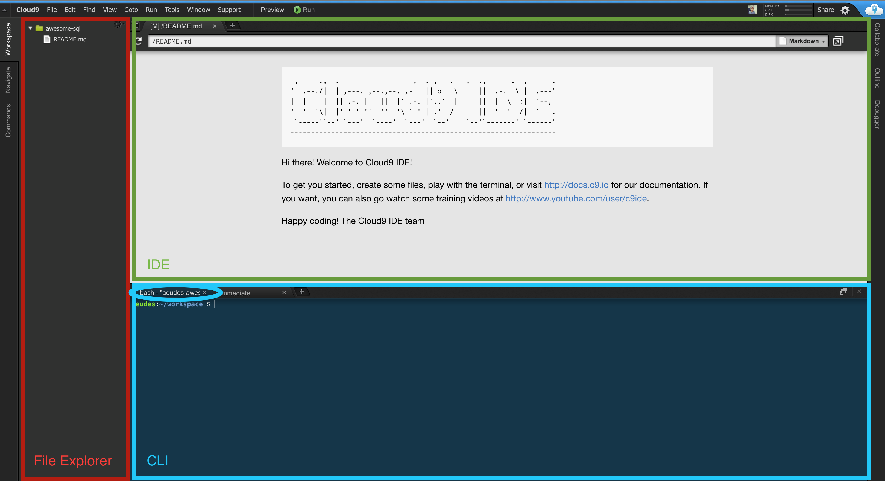Setup PostgreSQL
Copy this code in the CLI
$ sudo service postgresql start
$ sudo sudo -u postgres psql
First interaction

Try it!
-- Get the current date
SELECT CURRENT_DATE;
/**
* date
* ------------
* 2016-02-16
* (1 row)
*/
How to work with C9
- Create a new folder
sqlin your File exporer - Inside this folder create a first script
01-awesome-name.sql - Edit this file in the IDE
SELECT CURRENT_DATE;- Save:
cmd + sorctrl + sorFile > Save - Run the script from the CLI, in psql
\i sql/01-awesome-name.sql
How to work: result
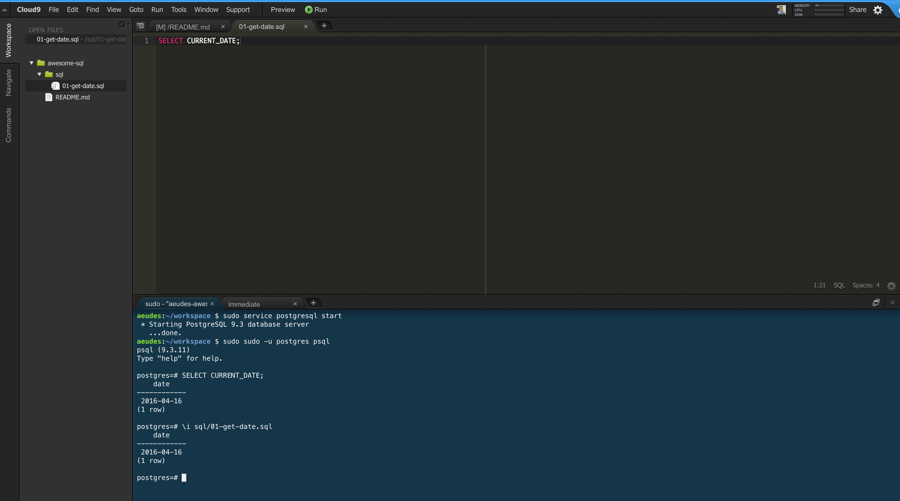Help
Open PSQL
$ sudo sudo -u postgres psql
Run a script
postgres=# \i PATH/to-script.sql
Close the client PSQL
postgres=# \q
The types

One rule
All the values of a column have to be of the same type
Types, types, types
- boolean
- character varying [ (n) ]
- text
- date
- integer
- double precision
- ...
Please meet Sheets
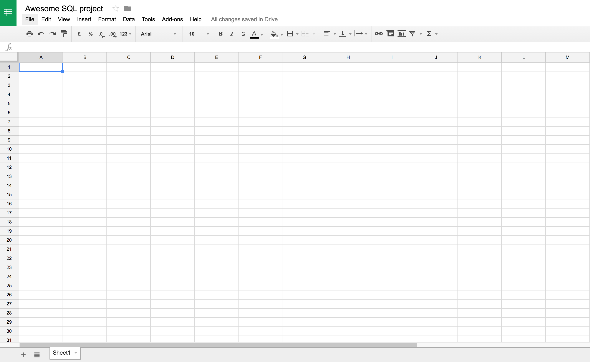I want to store some information about the students of GA
I create my first table Student
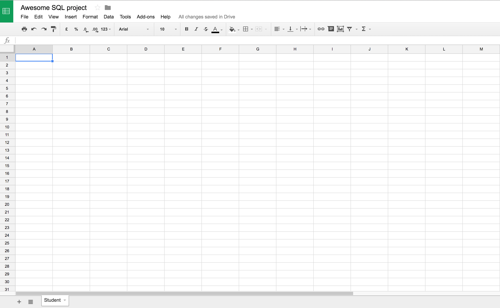How do I describe a student?
How do I describe a student?
- First name
- Last name
- Age
- ...
I create my first table Student
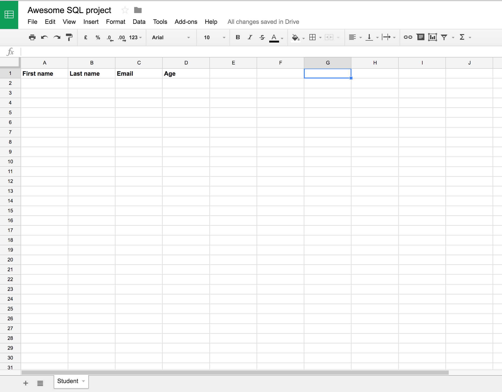Now we can insert some rows
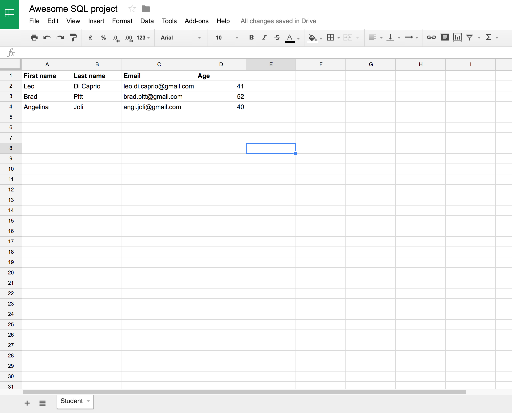Let's integrate the cities
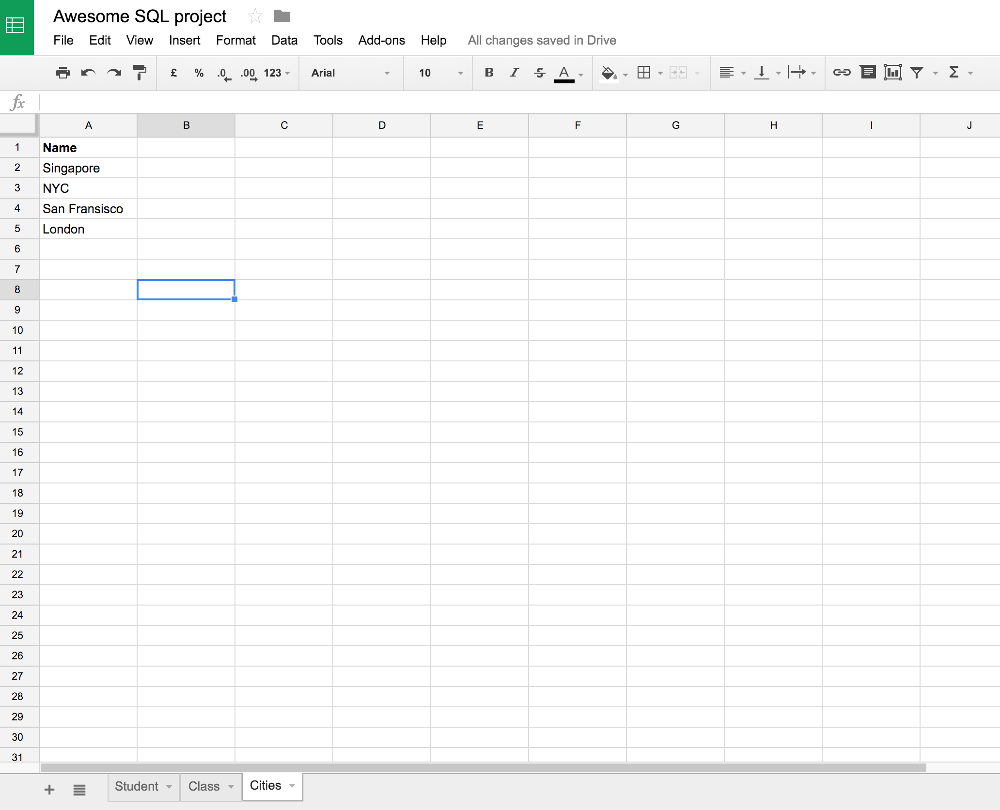Let's integrate the classes
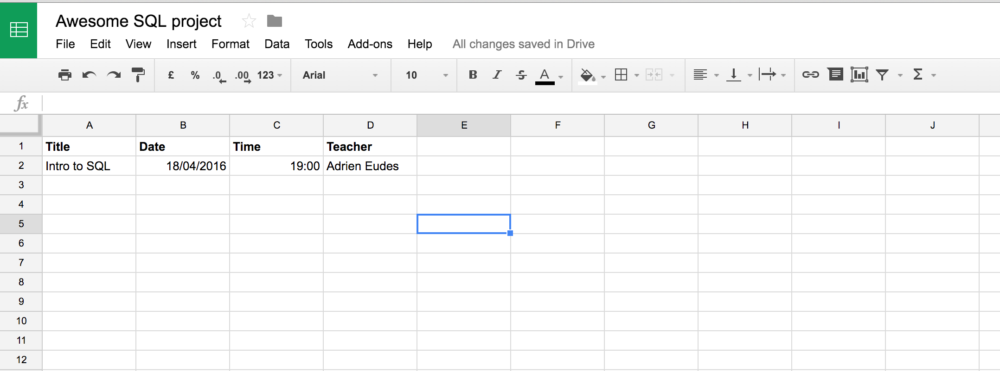How to link Students and Cities?

A Student has only one City
SQL Constraint
Pattern A
Add a Foreign Key in the Student table referring to the City table
SQL Constraint
Pattern A
- Create Primary keys in all the tables
- Create a Foreign key in the Student table
SQL Constraint
Pattern A
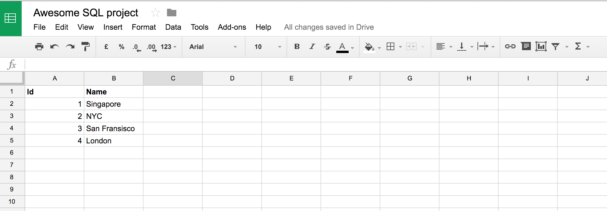SQL Constraint
Pattern A
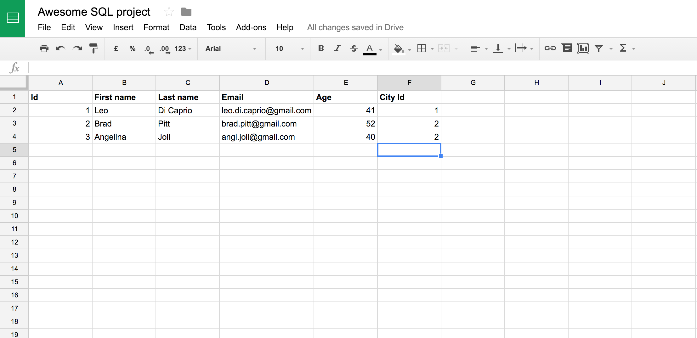How to link Students and Classes?

A Student has one or many Classes
SQL Constraint
Pattern B
Create a pivot table with 2 Foreign Keys referring to Student table and to Class table
The Foreign key couple is in fact the Primary key of this pivot table
SQL Constraint
Pattern A
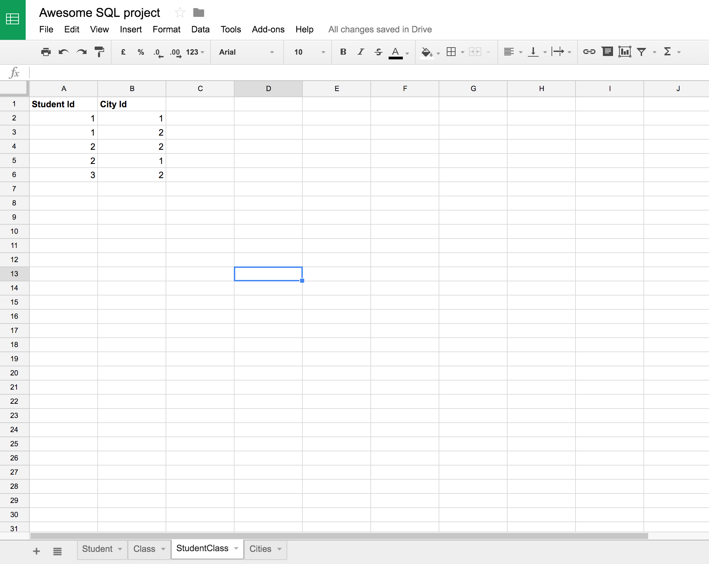STOP EXCEL
All about the queries
Query sample
-- Sample query
select o.order_id "Order ID", count(distinct i.id) "Quantity" from orders o inner join items i on o.order_id = i.order_id where o.delivered_at is not null and not i.is_sample group by o.order_id order by 1 desc limit 100;Please, indent
-- Indented sample query
SELECT
o.order_id AS "Order ID",
COUNT(DISTINCT i.id) AS "Quantity"
FROM
orders o
INNER JOIN
items i
ON o.order_id = i.order_id
WHERE
o.delivered_at IS NOT NULL AND NOT i.is_sample
GROUP BY
o.order_id
ORDER BY o.created_at DESC
LIMIT 100;Not only for you, but also for everyone else!
Query 1
Create a table
-- Create table query
DROP TABLE IF EXISTS student;
CREATE TABLE student (
id SERIAL PRIMARY KEY,
first_name VARCHAR(255),
last_name VARCHAR(255),
email VARCHAR(255),
age INTEGER
);Query 2
Insert some columns
-- Insert rows
INSERT INTO student (
first_name,
last_name,
email,
age
) VALUES (
'Leo',
'Di Caprio',
'leo@gmail.com',
40
), (
'Angelina',
'Joli',
'angi@gmail.com',
42
);Query 3
Retrieve your data
-- Select rows
SELECT
id,
first_name,
last_name
FROM
student
LIMIT 10;Your turn!
Create the tables City and Class and insert some data inside
Query 4
See your table
\d+ cityQuery 5
Update a table
-- Update a table
ALTER TABLE student
ADD city_id INTEGER REFERENCES city(id);Query 6
Update rows
-- Update rows
UPDATE
student -- Table name
SET
city_id = 1 -- Field to update
WHERE
id = 1 -- Row to update
;Your turn!
Create the pivot table student_class
Query 7
Retrieve you data (bis)
-- Select some data
SELECT
s.first_name AS "Student first name",
s.last_name AS "Student last name",
c.name AS "City"
FROM
student s
INNER JOIN city c ON c.id = s.city_id
WHERE
c.name = 'NYC'
ORDER BY
s.first_name DESC
LIMIT 10;Work with a bigger dataset
Set up the dataset
# Leave PSQL if opened with \q
$ wget https://raw.githubusercontent.com/aeud/sql-pres/master/movielens.sql # Download the dataset
$ sudo sudo -u postgres psql < movielens.sql # Add the dataset to your database
$ sudo sudo -u postgres psql # Restart PSQL client
You just created 6 tables
occupationsusersratingsmoviesgenresgenres_movies
Relations
A User has one Occupation
A Rating has one User and one Movie
A Movie has many Genres (via genre_movie)
Fields
-- PostgreSQL
\d+ occupations
\d+ users
\d+ ratings
\d+ movies
\d+ genres
\d+ genres_moviesBuilding a query
Sample
-- Indented sample query
SELECT
o.order_id AS "Order ID",
COUNT(DISTINCT i.id) AS "Quantity"
FROM
orders o
INNER JOIN
items i
ON o.order_id = i.order_id
WHERE
o.delivered_at IS NOT NULL AND NOT i.is_sample
GROUP BY
o.order_id
ORDER BY o.created_at DESC
LIMIT 100;Query clauses
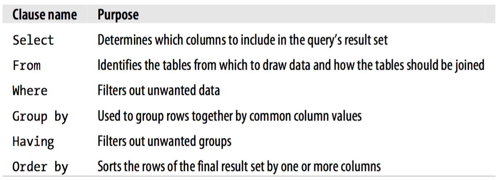SELECT
-- Apply these queries
SELECT * FROM users LIMIT 5;
SELECT id, age, gender FROM users LIMIT 5;
SELECT id AS "User ID", age AS "Age", gender AS "Gender" FROM users LIMIT 5;FROM
-- Apply these queries
SELECT * FROM users LIMIT 5;
SELECT * FROM movies LIMIT 5;WHERE
-- Apply these queries
SELECT * FROM users WHERE id = 1 LIMIT 5;
SELECT * FROM users WHERE gender = 'M' LIMIT 5;GROUP BY
Use case
How to determine how many females / males are recorded in our dataset?
| Gender | Count |
|---|---|
| M | 670 |
| F | 273 |
Aggregate functions
- SUM(field)
- COUNT(field)
- COUNT(DISTINCT field)
GROUP BY
-- Apply this queries
SELECT
u.gender AS "Gender", -- Dimension(s)
count(u.*) AS "Count" -- Aggregate function
FROM
users AS u
GROUP BY
gender -- Dimension(s)
;ORDER BY
-- Apply these queries
SELECT * FROM users ORDER BY age ASC LIMIT 5;
SELECT * FROM users ORDER BY age DESC LIMIT 5;
SELECT * FROM users ORDER BY gender ASC LIMIT 5;LIMIT
-- Apply these queries
SELECT * FROM users ORDER BY age ASC LIMIT 5;
SELECT * FROM users ORDER BY age ASC LIMIT 10;
SELECT * FROM users ORDER BY age ASC LIMIT 100; -- use \q to escapeExercise
How can I get the distribution of the movies, by release year?
Filtering
Conditions
The WHERE clause is made of a serie of expressions, linked by logical operators
Logical operators
- AND
- OR
- NOT
Rules
- TRUE
ANDFALSE = FALSE - TRUE
ORFALSE = TRUE - TRUE
AND(FALSEORTRUE) = TRUE - TRUE
ANDNOT(FALSEORTRUE) = FALSE
Expressions
- Number
- Column in a table
- Built-in functions (Documentation)
- Comparaison operators:
=,!=,<,>,<>,LIKE,IN - Arithmetic operators, such as
+,−,*,/
SQL
-- Conditions
SELECT
id,
age,
gender
FROM
users u
WHERE
u.gender = 'M' AND u.age < 35
ORDER BY
id desc
LIMIT 5;Your turn
With the documentation, write a query to fetch the movies released in 1996 with a title starting with the letter D or T
Your turn (Bonus)
Get the distribution of movies released in 1996, by title first letter
Get the distribution of movies with a title starting with P, by year of release
Querying multiple tables
How to get how many time a movie has been rated? And by which user?
Join
-- Join, use aliases!!
SELECT
m.title, -- 1
count(r.id) reviews, -- 2
count(distinct r.user_id) unique_reviews -- 3
FROM
movies m
INNER JOIN ratings r ON r.movie_id = m.id
ORDER BY
2 desc
LIMIT 5;Join
-- Join, use aliases!!
SELECT
m.title, -- 1
count(r.id) reviews, -- 2
count(distinct r.user_id) unique_reviews -- 3
FROM
movies m
INNER JOIN ratings r ON r.movie_id = m.id
GROUP BY
1
ORDER BY
2 desc
LIMIT 5;Your turn
Get the top 10 movies, by average rate
Your turn (Bonus)
Get some statistics by year, about the number of rates, the average rates, etc.. Be creative
Try to find an answer to this question: Does users give rates to movies only if they liked it? only if they hated it? only if they liked or hated it? (tip: analyse the distribution of rates)
Different ways to join